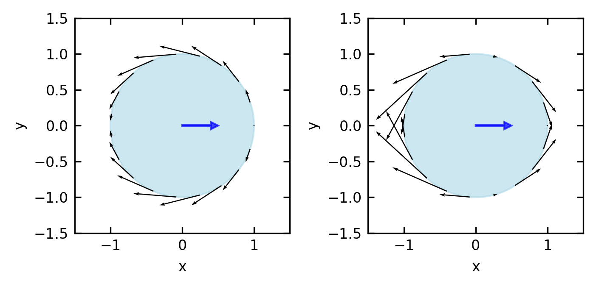
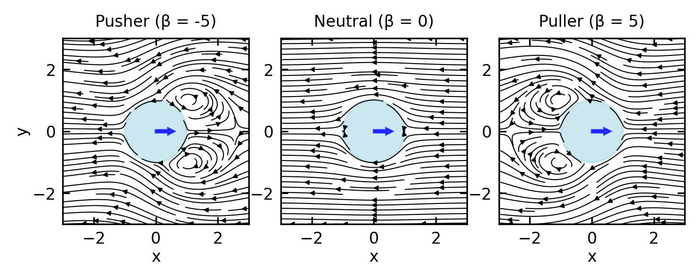
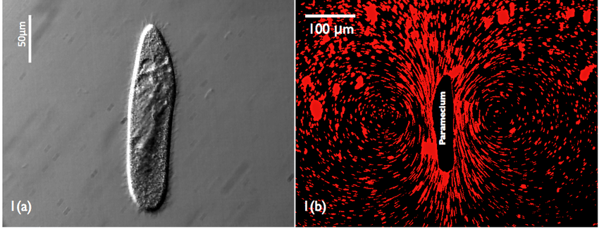
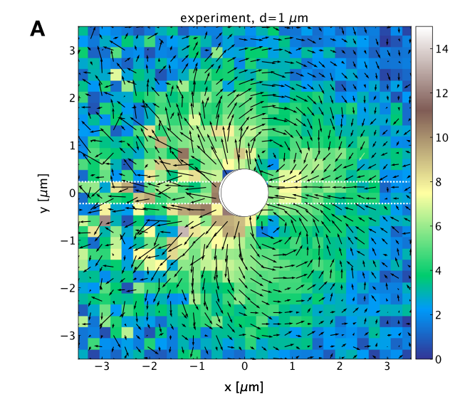
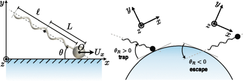
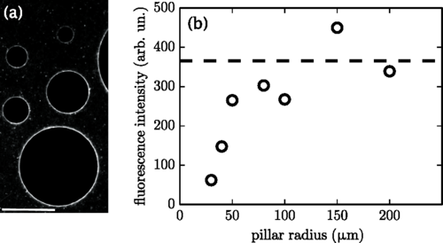
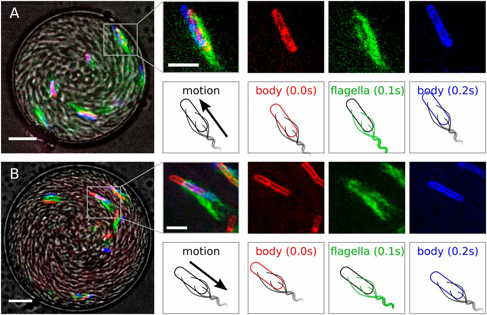
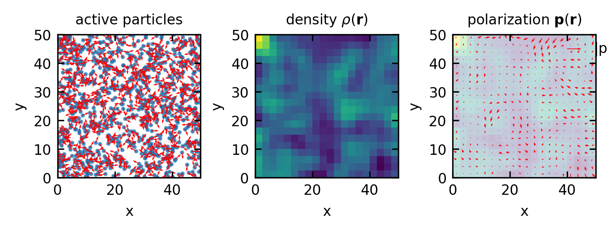

The squirmer model provides a simplified yet powerful framework for understanding the hydrodynamics of microswimmers with surface actuation, particularly relevant for organisms propelled by ciliary or flagellar beating. Originally developed by Lighthill and refined by Blake, this model captures the essential physics of swimming at low Reynolds numbers through prescribed surface deformations.
From Boundary Conditions to Surface Actuation
The squirmer model extends the fundamental solutions of Stokes equations to active surfaces by replacing the complex dynamics of cilia or flagella with an effective slip velocity at the swimmer’s surface. Instead of modeling individual beating appendages, we consider a spherical body with a prescribed tangential velocity at its surface that mimics the net effect of the propulsion mechanism.
Show code
# Create figurefig, ax = plt.subplots(1,2,figsize=get_size(12, 6))# Parametersa =1.0# radius of sphereB1 =1.0# first mode coefficientB2 =0.0# second mode coefficient (zero for neutral squirmer)# Generate points along the circletheta = np.linspace(0, 2*np.pi, 20)x = a * np.cos(theta)y = a * np.sin(theta)# Calculate tangential velocity at each pointu_theta = B1 * np.sin(theta) +0.5* B2 * np.sin(2*theta)# Calculate components of tangential velocityu_x =-u_theta * np.sin(theta)u_y = u_theta * np.cos(theta)# Plot the circle representing the squirmercircle = plt.Circle((0, 0), a, fill=True, color='lightblue', alpha=0.6)ax[0].add_patch(circle)# Plot the tangential velocities as arrowsax[0].quiver(x, y, u_x, u_y, color='black', scale=5, width=0.005)# Add arrow to indicate swimming directionax[0].arrow(0, 0, 0.4, 0, width=0.02, head_width=0.1, head_length=0.1, fc='blue', ec='blue', alpha=0.7)# Set plot propertiesax[0].set_xlim(-1.5, 1.5)ax[0].set_ylim(-1.5, 1.5)ax[0].set_aspect('equal')ax[0].set_xlabel('x')ax[0].set_ylabel('y')B1 =1.0# first mode coefficientB2 =-5.0# second mode coefficient (zero for neutral squirmer)# Generate points along the circletheta = np.linspace(0, 2*np.pi, 20)x = a * np.cos(theta)y = a * np.sin(theta)# Calculate tangential velocity at each pointu_theta = B1 * np.sin(theta) +0.5* B2 * np.sin(2*theta)# Calculate components of tangential velocityu_x =-u_theta * np.sin(theta)u_y = u_theta * np.cos(theta)circle1 = plt.Circle((0, 0), a, fill=True, color='lightblue', alpha=0.6)ax[1].add_patch(circle1)# Plot the tangential velocities as arrowsax[1].quiver(x, y, u_x, u_y, color='black', scale=10, width=0.005)# Add arrow to indicate swimming directionax[1].arrow(0, 0, 0.4, 0, width=0.02, head_width=0.1, head_length=0.1, fc='blue', ec='blue', alpha=0.7)# Set plot propertiesax[1].set_xlim(-1.5, 1.5)ax[1].set_ylim(-1.5, 1.5)ax[1].set_aspect('equal')ax[1].set_xlabel('x')ax[1].set_ylabel('y')plt.tight_layout()plt.show()

Figure 1— Tangential flow field at the surface of a neutral squirmer (\(\beta = 0\)) and a pusher (\(\beta = -5\)). The arrows represent the direction and magnitude of the tangential velocity component along the squirmer’s surface, with maximum flow at the equator and zero flow at the poles. The squirmer is moving to the right (positive x-direction).
The key insight of the squirmer model is the formulation of this surface slip velocity in terms of a series expansion using Legendre polynomials. For a sphere of radius \(a\), the tangential velocity at the surface is given by:
where \(θ\) is the polar angle measured from the swimming direction, \(P_n'\) is the derivative of the Legendre polynomial of degree \(n\), and \(B_n\) are coefficients that characterize the propulsion mechanism.
Each coefficient \(B_n\) corresponds to a specific mode of the surface actuation:
\(B_1\) determines the swimming speed (proportional to \(v_0 = \frac{2}{3}B_1\)
\(B_2\) controls the strength and sign of the force dipole (stresslet)
The complete flow field around the swimmer can be derived from these boundary conditions and is given by the radial and tangential velocity components in the moving particle frame:
At the surface boundary (r = a), the tangential velocity is given by \(u_\theta(a, \theta)=\sum_{n=1}^{\infty} B_n V_n\) while the radial component vanishes with \(u_r(a, \theta)=0\).
Limiting our analysis to just the first two modes (n = 1 and n = 2), the tangential velocity at the boundary simplifies to:
This allows us to introduce an important dimensionless quantity called the squirmer parameter:
\[
\beta=B_2 /\left|B_1\right|
\]
This parameter measures the ratio of the force dipole to the contribution of the source dipole. According to that, the swimmer are classified as
Squirmer Type
Parameter Value
Far-Field Decay
Force Configuration
Biological Example
Neutral squirmer
β = 0
~1/r³ (source dipole)
No force dipole
Some ciliates with symmetrical propulsion
Pusher
β < 0
~1/r² (force dipole)
Forces pointing outward
E. coli bacteria, sperm cells
Puller
β > 0
~1/r² (force dipole)
Forces pointing inward
Chlamydomonas (algae with anterior flagella)
Show code
# Create figure with three subplots for different squirmer typesfig, axes = plt.subplots(1, 3, figsize=get_size(12, 6))# Set up grid for velocity fieldx = np.linspace(-3, 3, 100)y = np.linspace(-3, 3, 100)X, Y = np.meshgrid(x, y)# Calculate R (distance from origin) and θ (polar angle)R = np.sqrt(X**2+ Y**2)Theta = np.arctan2(Y, X)# Parameters for squirmera =1.0# radius of squirmerB1 =1.0# first mode coefficient (determines swimming speed)# Calculate flow fields for different squirmer typesfor ax, beta, title inzip( axes, [-5, 0, 5], ["Pusher (β = -5)", "Neutral (β = 0)", "Puller (β = 5)"]):# B2 coefficient based on beta B2 = beta * np.abs(B1)# Set up arrays for velocity components u_r = np.zeros_like(X) u_theta = np.zeros_like(X)# Avoid singularity inside the particle mask = R > a# Calculate squirmer flow field components using first two modes# Radial component u_r[mask] = (2/3) * ((a**3/R[mask]**3) -1) * B1 * np.cos(Theta[mask]) +\ ((a**4/R[mask]**4) - (a**2/R[mask]**2)) * B2 * (3*np.cos(Theta[mask])**2-1)/2# Tangential component u_theta[mask] = (1/3) * ((a**3/R[mask]**3) +2) * B1 * np.sin(Theta[mask]) +\ (1/2) * (1*(a**4/R[mask]**4) +0*(a**2/R[mask]**2)) * B2 * np.sin(2*Theta[mask])# Convert from polar to Cartesian components u = u_r * np.cos(Theta) - u_theta * np.sin(Theta) v = u_r * np.sin(Theta) + u_theta * np.cos(Theta)# Draw the squirmer as a circle circle = plt.Circle((0, 0), a, fill=True, color='lightblue', alpha=0.6) ax.add_patch(circle)# Plot velocity field as streamlines ax.streamplot(X, Y, u, v, density=1.2, color='k', linewidth=0.5, arrowsize=0.5)# Add arrow to indicate swimming direction ax.arrow(0, 0, 0.4, 0, width=0.08, head_width=0.2, head_length=0.2, fc='blue', ec='blue', alpha=0.7)# Set plot properties ax.set_xlim(-3, 3) ax.set_ylim(-3, 3) ax.set_aspect('equal') ax.set_title(title) ax.set_xlabel('x', labelpad=1)if ax == axes[0]: ax.set_ylabel('y', labelpad=1)plt.tight_layout(pad=0.2, w_pad=0.1)plt.show()

Figure 2— Flow fields generated by different types of squirmers. Left to right: Pusher (β = -5), Neutral squirmer (β = 0), and Puller (β = 5). All swimmers are moving to the right (positive x-direction). Notice how pushers generate outward flows along their swimming axis, neutral squirmers produce a symmetric dipole pattern, and pullers create inward flows along their swimming axis.
Squirmer Dynamics and Classification
Based on the value of \(B_2\) relative to \(B_1\), squirmers can be classified into three fundamental types:
Neutral squirmers (\(B_2 = 0\)): These swimmers generate no force dipole in the far field. Their leading-order flow decays as \(1/r^3\) (source dipole), resulting in minimal long-range hydrodynamic interactions. The swimming speed is determined solely by \(B_1\).
Pushers (\(B_2 < 0\)): These generate a negative force dipole, pushing fluid away along their swimming axis and drawing it in from the sides. This flow pattern corresponds to organisms like E. coli or sperm cells that propel by pushing fluid backward. The far-field flow decays as \(1/r^2\).
Pullers (\(B_2 > 0\)): These generate a positive force dipole, pulling fluid in along their swimming axis and pushing it out to the sides. This pattern is characteristic of organisms like Chlamydomonas that pull fluid toward their body using anterior flagella. The far-field flow also decays as \(1/r^2\).
The connection to the force dipole approximation we discussed earlier becomes clear in the far field (at distances \(r \gg a\)), where the squirmer’s flow field is dominated by the \(B_2\) mode and can be approximated by:
This expression directly corresponds to the stresslet flow field we derived earlier, with the stresslet strength \(S\) proportional to \(B_2 a^2\). The sign of \(B_2\) determines whether the squirmer acts as a pusher (\(B_2 < 0\)) or puller (\(B_2 > 0\)), creating the characteristic force dipole field that dominates long-range hydrodynamic interactions.
Swimming Efficiency
Knowing a swimmer’s speed is not the same as knowing how efficiently it achieves that speed. Lighthill (1952) proposed a hydrodynamic efficiency that compares the power needed to drag an equivalent passive sphere at speed \(U\) against the total viscous power the swimmer actually dissipates:
\[\eta_L = \frac{6\pi\mu a U^2}{P_\text{total}}\]
Because passive dragging is the most power-efficient mode of translation in Stokes flow, \(\eta_L \leq 1\) always. In practice, biological microswimmers achieve values in the range \(10^{-3}\) to \(10^{-2}\), a reflection of the unavoidable cost of generating directed motion through irreversible fluid deformation at low Reynolds number.
For the squirmer, the swimming speed \(U = \tfrac{2}{3}B_1\) is set entirely by the first mode. The stresslet mode \(B_2\) contributes to viscous dissipation without advancing the swimmer, so any finite \(|\beta| = |B_2/B_1| > 0\) reduces efficiency relative to the neutral squirmer. Pushers and pullers are therefore inherently less efficient than a neutral squirmer moving at the same speed.
This reveals a tradeoff at the heart of microswimmer design. The stresslet field that enables long-range hydrodynamic communication between swimmers comes at an efficiency cost: the same \(B_2\) mode that creates the pusher or puller flow signature is precisely the term that wastes energy. Since the stresslet strength also sets the scale of the active stress tensor \(\boldsymbol{\sigma}^\text{act} \propto B_2\), high active stress and low Lighthill efficiency go hand in hand in dense active suspensions, a point we return to when discussing the mechanical properties of active materials.
For synthetic phoretic swimmers such as Janus particles, the energy budget must be treated differently because propulsion draws on chemical free energy rather than direct mechanical actuation. Sabass and Seifert (Phys. Rev. Lett. 105, 218103, 2010; J. Chem. Phys. 2012) developed an efficiency framework for surface-driven motion using irreversible linear thermodynamics, accounting for both the viscous dissipation and the chemical energy consumed in maintaining the solute gradient. Two results from this analysis are particularly instructive. First, there is a universal upper bound of \(\eta = 1/2\) on efficiency at maximum power for surface-driven swimmers, regardless of the specific phoretic mechanism. Second, a general scaling relation shows that appreciable efficiency is only possible when the swimmer size \(a\) is comparable to or smaller than the range \(\lambda\) of the surface interaction: \(\eta \sim (a/\lambda)^{-2}\) in the large-swimmer limit. This means nanoswimmers can in principle outperform microswimmers in efficiency, reversing the intuition one might carry over from macroscopic propulsion. The analysis also identifies a “reaction-induced concentration distortion” – a coupling between the spatial distribution of reactivity on the swimmer surface and the resulting solute concentration field – that significantly modifies the swimming speed and must be accounted for in a consistent energy balance.
Applications and Examples
The squirmer model has proven invaluable for understanding both biological and synthetic microswimmers:
Biological examples include ciliated organisms like Paramecium, which use coordinated beating of thousands of cilia to generate metachronal waves along their surface. These waves can be effectively modeled as squirmer modes. The flexibility of the squirmer model allows representation of diverse organisms from bacteria to algae by adjusting the \(B_n\) coefficients to match observed flow fields.

Figure 3— Paramecium swimming. The image shows the flow field around a swimming Paramecium, with clear metachronal waves of cilia generating the characteristic flow pattern that can be effectively modeled using the squirmer framework. (Jana, S., Um, S. H. & Jung, S. Paramecium swimming in capillary tube. Phys. Fluids 24, 041901 (2012).)
Artificial microswimmers such as autophoretic Janus particles can also be described using the squirmer framework. By selecting appropriate \(B_n\) values, researchers can design synthetic swimmers with specific propulsion characteristics and hydrodynamic signatures.

Figure 4— In-plane flow field around a \(\phi = 1\mu\mathrm{m}\) Janus particle (JP) determined from experiments using gold nanoparticle tracers (\(\phi = 250\) nm). (Bregulla, A. P. & Cichos, F. Flow fields around pinned self-thermophoretic microswimmers under confinement. J. Chem. Phys. 151, 044706 (2019).)
Squirmer interactions with surfaces and other swimmers provide insight into collective behavior. Near boundaries, squirmers exhibit different behaviors depending on their type: pushers tend to be attracted to surfaces and align parallel to them, while pullers are often repelled. When multiple squirmers interact, their collective dynamics depend strongly on the relative values of their \(B_n\) coefficients, leading to complex emergent behaviors ranging from stable clusters to turbulent swarms.
The squirmer model thus bridges the gap between microscopic propulsion mechanisms and macroscopic collective behaviors, providing a versatile framework for understanding active matter across scales.
Hydrodynamic Interactions of Dipolar Swimmers
The force dipole description provides a powerful framework for understanding the interactions between microswimmers and their environment. Here we examine how these interactions manifest for pushers and pullers in two common scenarios: near boundaries and with other swimmers.
Swimmer-Wall Interactions:
When a microswimmer approaches a solid boundary, its hydrodynamic flow field interacts with the boundary, leading to effective forces and torques on the swimmer. For a dipolar swimmer with orientation vector \(\mathbf{e}\) at distance \(h\) from a flat no-slip wall, the interaction can be analyzed using the method of images.
Figure 5— Flow fields generated by two squirmers separated perpendicular to their swimming direction, mimicking a swimmer near a wall. Left: Two pushers (β = -5), Right: Two pullers (β = 5). The swimmers are moving in the positive x-direction, parallel to the imaginary boundary between them (dashed line). This configuration simulates the flow field experienced by a squirmer swimming parallel to a no-slip wall.
The key physical principle is that the wall represents a symmetry plane between the real swimmer and its image, where the no-slip boundary condition must be satisfied. The flow at any point is the sum of the flow from the real swimmer and its image. Critically, the interaction experienced by the swimmer is determined by the flow field generated by its image at the swimmer’s position.
For a force dipole with strength \(S\) and orientation \(\mathbf{e}\) at distance \(h\) from a wall with normal vector \(\mathbf{n}\), the image system consists of:
A reflection of the original force dipole
Additional singularities to ensure the no-slip condition at the wall
The flow field at the swimmer’s position due to its image is:
\[\mathbf{u}_{image}(\mathbf{r}_{swimmer}) \approx\frac{S}{8\pi\eta}\frac{3(\mathbf{e}\cdot\mathbf{n}-1)^2}{(2h)^2}\mathbf{n} + \text{higher order terms}\]
where \(\eta\) is the fluid viscosity and \(2h\) is the distance between the swimmer and its image. This means pushers (\(S<0\), extensile) experience a flow field from the image pointing towards the wall – they are attracted to it – while pullers (\(S>0\), contractile) experience a flow field pointing away from the wall and are repelled.
The superposition of a force dipole with its image dipole to simulate the wall is rendering the flow field components normal to the wall zero, yet the tangential components are not. One could term that slip boundary conditions. The correct hydrodynamics at a wall with no-slip boundary conditions is, nevertheless, up to a factor of \(2/3\) the same.
The image system also generates a flow field with rotational components that create a torque on the swimmer:
If we define \(\theta\) as the angle between the swimmer’s orientation vector \(\mathbf{e}\) and the wall normal vector \(\mathbf{n}\), we can rewrite this expression as:
This shows that the rotational effect is strongest at \(\theta = \pi/4\) (or \(45°\)) and vanishes when the swimmer is either parallel (\(\theta = \pi/2\)) or perpendicular (\(\theta = 0\)) to the wall.
This rotational flow tends to align pushers parallel to the wall and pullers perpendicular to it.


Figure 6— Wall-mediated hydrodynamic interactions of E. coli bacteria (pushers). Left: Flow visualization shows how E. coli swimmers create characteristic dipolar flow fields. Right: Bacteria become trapped near convex surfaces due to hydrodynamic torques that align them parallel to the wall, leading to circular trajectories and accumulation at surfaces. ( Sipos, O., Nagy, K., Leonardo, R. D. & Galajda, P. Hydrodynamic Trapping of Swimming Bacteria by Convex Walls. Phys. Rev. Lett. 114, 258104 (2015).)
Swimmer-Swimmer Interactions:
When two swimmers interact in bulk fluid, there’s no no-slip boundary condition to satisfy. Each swimmer directly experiences the flow field generated by the other swimmer.
For two swimmers with force dipole strengths \(S_1\) and \(S_2\) and orientations \(\mathbf{e}_1\) and \(\mathbf{e}_2\), separated by vector \(\mathbf{r}\) (with magnitude \(r\) and direction \(\hat{\mathbf{r}}\)), the flow field generated by swimmer 2 at the position of swimmer 1 is:
These hydrodynamic interactions help explain many observed phenomena in bacterial suspensions (primarily pushers) and algal suspensions (primarily pullers), including the tendency of bacteria to accumulate near surfaces and the different collective behaviors observed in dense suspensions of different microorganism types.

Figure 7— Drop overview in gray scale: bright field image. Positions of the membrane (false colored red at time t = 0, blue at t = 0.2 s) and flagella (false colored green at t = 0.1 s) dyes help determine the cell orientation. (A) Forward motion: cell at the oil interface both point and move to the top left corner. (B) Backward motion: the cell is pointing to the top left corner while moving overall in the opposite direction. (Scale bars: at the drop images, 10 μm; at the individual bacterium images, 5 μm.) ( Lushi, E., Wioland, H. & Goldstein, R. E. Fluid flows created by swimming bacteria drive self-organization in confined suspensions. Proc. Natl. Acad. Sci. 111, 9733–9738 (2014).)
Figure 8— Simulation results with and without hydrodynamic interactions are compared with experimental observations under circular confinement. ( Lushi, E., Wioland, H. & Goldstein, R. E. Fluid flows created by swimming bacteria drive self-organization in confined suspensions. Proc. Natl. Acad. Sci. 111, 9733–9738 (2014).)
Hydrodynamic Singularities and Time-Reversibility Breaking
This distinction has important physical consequences: source dipoles enable self-propulsion but decay rapidly, while force dipoles dominate the long-range interactions between swimmers. These hydrodynamic singularities directly impact time reversibility in swimming. While the Stokes equations themselves are time-reversible, the interactions between swimmers and their environment through these flow fields introduce time-irreversibility in several important ways:
Force dipole asymmetry: The force dipole structure (whether pusher or puller) creates directional flow fields that fundamentally break time-reversal symmetry. For a swimmer with orientation vector \(\mathbf{e}\) and stresslet strength \(S\), the far-field velocity is given by:
Under time reversal \(t \rightarrow -t\), the velocity field would reverse direction (\(\mathbf{u} \rightarrow -\mathbf{u}\)), but the stresslet structure determined by \(S\) and \(\mathbf{e}\) remains unchanged relative to the swimmer’s body. This creates a mathematical inconsistency, as the swimmer would need to generate a stresslet of opposite sign to maintain physical consistency under time reversal.
Interaction with boundaries: The method of images allows us to calculate the hydrodynamic interaction between a swimmer and a no-slip boundary. For a swimmer at distance \(h\) from a planar wall, the image system includes additional singularities that break time-reversal symmetry. For a force dipole parallel to the wall, the interaction energy scales as:
\[E_{wall} \sim \frac{S}{h^2}\]
where the sign of \(S\) determines attraction or repulsion. For pushers (\(S > 0\)), \(E_{wall} < 0\) creates attraction, while for pullers (\(S < 0\)), \(E_{wall} > 0\) leads to repulsion. This asymmetric interaction cannot be time-reversed while maintaining consistency with the force-free swimming constraint. We will revisit these boundary interactions in Lecture 8 when discussing mechanical properties of active materials.
Collective dynamics: In suspensions of multiple swimmers, the pairwise hydrodynamic interaction energy between two swimmers with orientations \(\mathbf{e}_1\) and \(\mathbf{e}_2\) separated by vector \(\mathbf{r}\) scales as:
Here, \(E_{int}\) represents the hydrodynamic interaction energy between two microswimmers, capturing the energetic cost or benefit of their relative positions and orientations. This interaction energy determines whether swimmers tend to align, attract, or repel each other based on their relative configurations and dipole types (\(S_1\) and \(S_2\)). These interactions lead to equations of motion with nonlinear coupling terms that produce complex collective dynamics and spontaneous symmetry breaking. We’ll explore these collective phenomena in greater detail in Lecture 7 on Collective Motion and Lecture 8 on Active Turbulence and Topological Defects, where we’ll examine how these hydrodynamic interactions drive the emergence of active turbulence characterized by chaotic flows and topological defects. The collective behavior that emerges from these microscopic interactions makes time reversal physically impossible, even in the low Reynolds number regime where the Stokes equations themselves are time-reversible.
Energy dissipation pathway: The kinetic energy spectrum \(E(k)\) of active suspensions follows different scaling laws depending on the swimmer type. For pushers, energy is transferred to larger scales (inverse cascade) with:
\[E(k) \sim k^{-\alpha}\]
where \(\alpha > 0\) and \(k\) is the wavenumber. The dissipation rate at scale \(k\) can be expressed as:
\[\varepsilon(k) = 2\nu k^2 E(k)\]
This directional energy transfer, governed by the spectral flux \(\Pi(k) = -\frac{d}{dk}\int_0^k \varepsilon(k') dk'\), represents another mathematical formulation of time-irreversibility in the system. We will explore these energy cascades in more detail in Lecture 5 on Continuum Theories and Lecture 8 on Active Turbulence.
The Oseen tensor and its derivatives (source dipoles, force dipoles) thus provide the mathematical framework for understanding how microswimmers break time-reversibility despite operating in the seemingly time-reversible Stokes flow regime. The long-range nature of these hydrodynamic interactions (particularly the slow \(1/r^2\) decay of force dipoles) means that even distant swimmers influence each other in ways that cannot be easily disentangled or reversed, contributing to the fundamental non-equilibrium character of active matter systems. These topics will be further developed in Lecture 5 when we discuss coarse-grained hydrodynamic theories.
Continuum Theories of Active Matter
In preceding lectures, we investigated microscopic models of active matter, with focus on individual self-propelled particles such as Active Brownian Particles (ABPs) and Run-and-Tumble Particles (RTPs), along with microswimmers and their hydrodynamic interactions. Nevertheless, actual active systems typically comprise \(10^3\) to \(10^6\) constituents, rendering particle-based methodologies computationally intensive and conceptually complex.
This necessitates a continuum formulation, wherein we characterize the system via fields that vary continuously in \(\mathbf{r}\) and \(t\) instead of monitoring individual particles. We shall examine how these continuum theories facilitate our understanding of collective phenomena in active systems.
Hydrodynamic Theories and Coarse-Graining
Basic Principles of Coarse-Graining
Coarse-graining is like zooming out from a detailed map to see the big picture. Instead of tracking every particle, we describe the system using smoothly varying fields. Here’s how it works:
Identifying what matters at large scales: Imagine a crowd of people. From far away, you don’t see individuals but patterns of density and movement. Similarly, we focus on:
Density fields \(\rho(\mathbf{r},t)\) - how many particles are in each region
Velocity fields \(\mathbf{u}(\mathbf{r},t)\) - how fast and in what direction particles move
Orientation fields \(\mathbf{p}(\mathbf{r},t)\) - which way particles are pointing
Keeping track of what’s conserved: Some quantities like the total number of particles can’t disappear.
Describing how things flow: We need equations for how currents and forces depend on our fields. Like how traffic flow depends on car density - too many cars and everything slows down.
Adding the “active” ingredients: What makes active matter special is that particles consume energy to move. This creates effects that wouldn’t exist in passive systems, like spontaneous flows or pattern formation.
Let’s see this in action by looking at a system of Active Brownian Particles (ABPs):

Figure 9— Coarse-graining procedure: from a collection of individual active particles with positions \(\mathbf{r}_i\) and orientations \(\mathbf{n}_i\) (left) to continuous density \(\rho(\mathbf{r})\) (middle) and polarization \(\mathbf{p}(\mathbf{r})\) fields (right). The density field captures particle concentrations, while the polarization field shows the average local orientation.
From these coarse-grained fields, we can derive the hydrodynamic equations by:
From the density field, we obtain the continuity equation: \[\frac{\partial \rho}{\partial t} + \nabla \cdot \mathbf{j} = 0\] where \(\mathbf{j} = v_0 \rho \mathbf{p}\) for ABPs. Here \(v_0\) is the self-propulsion speed of the active particles (the constant speed at which ABPs move).
For the flow field, we include the Navier-Stokes equation (or its overdamped version for low Reynolds number): \[\rho \frac{\partial \mathbf{u}}{\partial t} + \rho (\mathbf{u} \cdot \nabla) \mathbf{u} = -\nabla p + \eta \nabla^2 \mathbf{u} + \nabla \cdot \boldsymbol{\sigma}^{active}\]
This equation describes how the fluid velocity field \(\mathbf{u}\) evolves, where \(p\) is pressure, \(\eta\) is viscosity, and \(\boldsymbol{\sigma}^{active}\) represents active stresses generated by the particles.
For the polarization field, the dynamics include several key terms that represent different physical processes: \[\frac{\partial \mathbf{p}}{\partial t} + (\mathbf{u} \cdot \nabla) \mathbf{p} = -D_r \mathbf{p} + v_0 \nabla \rho + D_p \nabla^2 \mathbf{p} + \mathbf{\Omega} \cdot \mathbf{p} + \alpha (\mathbf{I} - \mathbf{p}\mathbf{p}) \cdot \mathbf{E} \cdot \mathbf{p} + ...\]
\((\mathbf{u} \cdot \nabla) \mathbf{p}\): This advection term describes how the background flow transports the polarization field.
\(-D_r \mathbf{p}\): This represents rotational diffusion, where \(D_r\) is the rotational diffusion coefficient. This term causes the polarization to decay over time as particles randomly change their orientation due to thermal fluctuations or intrinsic tumbling.
\(v_0 \nabla \rho\): This is a density gradient term, where \(v_0\) is the self-propulsion speed. It captures how particles tend to align their motion up or down density gradients. This term is responsible for phenomena like particle accumulation or depletion in certain regions.
\(D_p \nabla^2 \mathbf{p}\): This represents spatial diffusion of the polarization field with diffusion coefficient \(D_p\). It smooths out sharp variations in the polarization field over time.
\(\mathbf{\Omega} \cdot \mathbf{p}\): This term captures how vorticity \(\mathbf{\Omega} = \nabla \times \mathbf{u}\) in the flow field causes the polarization to rotate.
\(\alpha (\mathbf{I} - \mathbf{p}\mathbf{p}) \cdot \mathbf{E} \cdot \mathbf{p}\): This represents how particles align in response to flow gradients, where \(\mathbf{E}\) is the strain rate tensor and \(\alpha\) is the flow alignment parameter.
The “…” indicates additional terms that may be present, such as alignment interactions between particles, effects of external fields, or higher-order nonlinear terms that become important at high densities or strong activity.
Active vs. Passive Hydrodynamics
A key feature that distinguishes active from passive hydrodynamics is the presence of active stresses. Let’s explore this fundamental difference in depth:
Passive stress originates from thermodynamic free energy and always works toward equilibrium. These stresses derive from conservative forces that aim to minimize the system’s free energy, following the laws of equilibrium thermodynamics.
Examples:
Elastic stress in polymers: When a polymer network is deformed, it develops restoring forces proportional to the deformation. These forces vanish at equilibrium.
Surface tension: In a water droplet, surface molecules experience an inward force that minimizes surface area and reaches equilibrium in a spherical shape.
Nematic elasticity: When a liquid crystal is deformed from its preferred alignment, it develops torques that restore the director field to its equilibrium configuration.
Active stress is fundamentally non-equilibrium and continuously injects energy at the microscopic scale. These stresses:
Cannot be derived from any free energy functional
Persist even in steady states, constantly consuming energy
Generate flows and deformations that would violate the second law of thermodynamics in passive systems
Examples:
Contractile stress: In actomyosin networks (as in muscle cells), myosin motors pull actin filaments together, generating contractile stresses (\(\boldsymbol{\sigma}^\text{active} > 0\)) that cause network shrinkage. These motors convert chemical energy from ATP hydrolysis directly into mechanical work.
Extensile stress: In microtubule-kinesin bundles, kinesin motors slide antiparallel microtubules apart, generating extensile stresses (\(\boldsymbol{\sigma}^\text{active} < 0\)) that push material outward. This creates remarkable flow patterns like those seen in the Dogic Lab experiments.
Dipolar swimmers: Bacterial suspensions (pushers) generate extensile stresses, while algal suspensions (pullers) generate contractile stresses through their dipolar flow fields.
The mathematical form of the active stress tensor is often written as:
where \(\mathbf{Q}\) is the nematic order tensor describing local alignment, and \(\zeta\) is the activity parameter. The sign of \(\zeta\) distinguishes contractile (\(\zeta > 0\)) from extensile (\(\zeta < 0\)) systems.
In a complete hydrodynamic description, the total stress combines both components:
The interplay between these stresses leads to remarkable phenomena absent in passive systems, such as spontaneous flows, active turbulence, and motility-induced phase separation. The specific type and strength of active stress determines which instabilities dominate, shaping the emergent patterns we observe.
Examples of such theories include:
Coarse-Grained Field Theories:
Conservation equations for density, momentum, and orientation fields
Utilizes fields such as density \(\rho(\mathbf{r},t)\), velocity \(\mathbf{u}(\mathbf{r},t)\), and polarization \(\mathbf{p}(\mathbf{r},t)\)
Active Liquid Crystal Theory:
Nematic Order Parameter (\(\mathbf{Q}\)-tensor) - Characterizes orientational order in apolar particles
Modified Navier-Stokes Equations - Incorporating active stress terms \(\boldsymbol{\sigma}^{\text{active}}\)
Figure 10— Active nematic turbulence in experimental and numerical systems: (a) A two-dimensional active nematic suspension of microtubule bundles and kinesin at the water-oil interface. The white scale bar corresponds to 100μm (courtesy of the Dogic Lab). (b)–(d) Numerical simulations of an extensile active nematic obtained from an integration of Eq.(1). (b) Flow velocity (black streamlines) and vorticity (background color). (c) Schlieren texture constructed from the director field n. The red and blue dots mark, respectively, the +1/2 and -1/2 disclinations. (d) Clockwise rotating (blue) and counterclockwise rotating (red) vortices, detected by measuring the Okubo-Weiss field. Source
Active Stress Models:
Contractile Systems (\(\zeta > 0\)) - Generate inward forces along principal axis (e.g., actomyosin networks)
Extensile Systems (\(\zeta < 0\)) - Generate outward forces along principal axis (e.g., microtubule-kinesin assemblies)
Toner-Tu Theory - Field-theoretic framework for collective motion and phase transitions
Active Model H - Generalization of Model H (describing phase-separating fluids) to incorporate activity \(\alpha\)